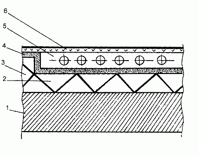
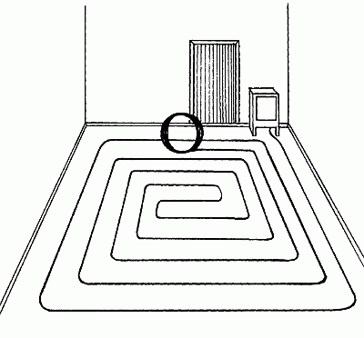
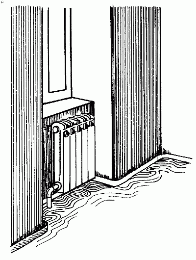

Теплые полы.

Теплый пол – это прежде всего пол, температура поверхности которого комфортна для вас в данный момент. Еще в давние времена люди стремились к этому – прокладывали под полом своих хижин дымоходы от костров. Теперь мы можем прогреть пол гораздо проще и пользоваться этой возможностью с максимальным удобством.
Традиционные системы отопления создают поток теплого воздуха, который поднимается к потолку, там охлаждается и затем опускается вниз к полу, – постоянные конвекционные потоки образуют сквозняки.
Создается следующее распределение температур в помещении:
– под потолком – 26° С;
– в рабочей зоне, на расстоянии 2 м от пола, – 22° С;
– на полу – 18° С.
Таким образом, средняя температура воздуха в помещении становится выше необходимой при расчетной 22° С, а пол остается холодным.
Принцип устройства теплого пола широко применяется в ванных, кухнях, коридорах и детских комнатах. Дело в том, что это один из вариантов отопления дома, обладающий рядом достоинств: тепло распределяется равномерно, без сквозняков и поступает в виде излучения, что более естественно для организма человека. Такой пол максимально прост в управлении, экономичен, долговечен, невидим для глаза, не занимает полезной площади.
Теплый пол может быть водяным или электриче-ским. Устройство водяного пола возможно при строительстве коттеджа, когда с нуля закладывается вся система отопления.
Электрический пол устроен гораздо проще и может быть установлен на любой стадии ремонта или строительства в доме, квартире, бассейне или другом месте.
Для достижения комфортной температуры в рабочей зоне помещения требуются значительные затраты энергии – это особенно актуально для помещений с высокими потолками.
Безопасна ли система теплого полаЭта система абсолютно безопасна. На все ее компоненты имеются сертификаты соответствия, выданные Ростестом. Также есть гигиенические и пожарные сертификаты.
Система широко используется на протяжении нескольких десятков лет в скандинавских странах, изве-стных своими жесткими требованиями к безопасности. Безопасность гарантируется высочайшим качеством продукции и специальной конструкцией кабеля.
Нагревательный элемент кабеля защищен изоляцией из высокомолекулярного полиэтилена, затем медным экраном, а сверху закрыт оболочкой из поливинилхлорида, которая устойчива практически ко всем органическим и неорганическим веществам.
Защитное заземление, выполненное в соответствии с «Правилами устройства электроустановок», обеспечивает полную безопасность работы системы.
Система очень часто используется во влажных помещениях – в ванных, душевых, бассейнах. Оболочка кабеля, концевая и соединительная муфты водонепроницаемы и проверяются производителем путем погружения кабеля, находящегося под напряжением 10 000 В, в ванну с водой. Применение реле токов утечки обеспечит безопасную работу системы.
Можно ли полностью отопливать дом с помощью теплого полаНа таком режиме работают большинство норвеж-ских, скандинавских домов и гостиниц.
Эту технологию стали использовать и в странах с мягким климатом.
В нашем, более суровом, климате (зимой в Москве, например, температура достигает почти –37° С), теплый пол используется, наряду с устройством традиционной системы отопления.
Сохраняя свои преимущества, он удачно дополняет традиционное отопление, а весной может заменить его полностью.
Кроме того, в домах с централизованным отоплением теплый пол отлично выручает в переходные осенне-весенние периоды, когда основное отопление еще или уже не работает.
Устройство электрического теплого полаПринципиальную схему электрического теплого пола можно увидеть на рис. 16.
Слой тепловой изоляции выполняет также роль акустической изоляции. Обычно ее изготавливают из полистироловых плит, покрытых фольгой, либо из волокнистой минеральной плиты.
Полистироловые плиты, применяемые для теплоизоляции, покрыты полиэтиленовой фольгой с напечатанной сеткой, облегчающей монтаж контура с определенным шагом.
При установке следят за тем, чтобы между плитами не было никаких зазоров.
При использовании плит из минерального волокна неровности слоя изоляции до 5 мм считаются вполне допустимыми.
Краевая изоляция выполняет 2 функции:
– заполняет тепловой разрыв от боковых стен;
– ограничивает затраты тепла через боковую стенку.
Толщина теплоизоляции по периметру не должна превышать 5 мм. Обычно ее принято выполнять из вспененного полиуретана с приваренной полиэтиленовой пленкой, одновременно являющейся гидроизоляцией. Высота краевой изоляции должна быть равна высоте бетонного слоя.

Рис. 16. Схема устройства электрического теплого пола:
1 – конструкция перекрытия; 2 – тепловая изоляция; 3 – краевая изоляция; 4 – гидроизоляция; 5 – слой бетона с греющим контуром; 6 – половое покрытие
При креплении греющего контура (рис. 16) в качестве элементов крепления используют:

Рис. 17. Установка греющего контура
– сетку, выполненную из стальной проволоки;
– изоляционные плиты с соответствующими профилированными углублениями.
Перед заливкой бетона следует проверить целостность греющего контура.
Далее греющий контур заливают бетонным раствором и аккуратно выравнивают швы (рис. 18).

Рис. 18. Заливка бетонного раствора
Устранить проблему холодных полов поможет также новейшая разработка фирмы ССТ – пленочный напольный обогреватель «Теплофол».
Продукт космических технологий, «Теплофол» – это рулон специального материала толщиной не более 1 мм, который раскатывают, крепят к полу скотчем, а сверху укладывают любое напольное покрытие, например ковролин, паркет, линолеум. Вся процедура установки обогревателя занимает 5 минут. Толщина пола при этом не увеличивается.
Обогреватель работает от электрической сети. Он абсолютно безопасен и прост в эксплуатации и монтаже. Нужная температура задается с помощью терморегулятора. «Теплофол» можно перенести на новое место, если, например, вы захотите утеплить пол в другой комнате.
«Теплофол» прогревает воздух около пола до 23–24° С, а на уровне груди до 21–22° С. Так что применение этой системы делает атмосферу в помещении более благоприятной для здоровья. В результате дети, которые любят играть на полу, не переохлаждаются и не болеют, а пожилые люди перестают жаловаться на духоту и сквозняки.